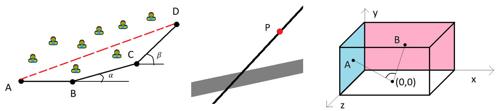
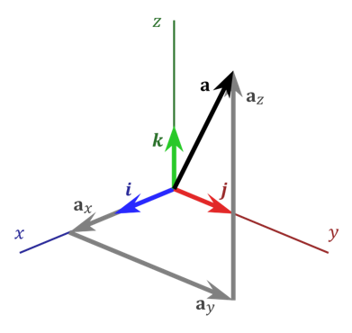
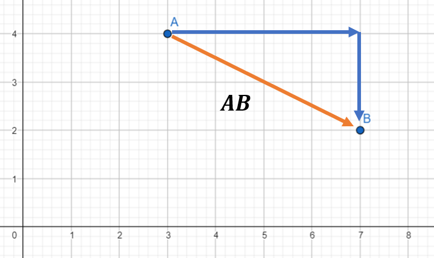
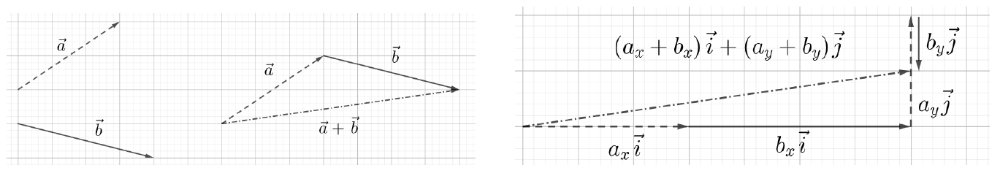
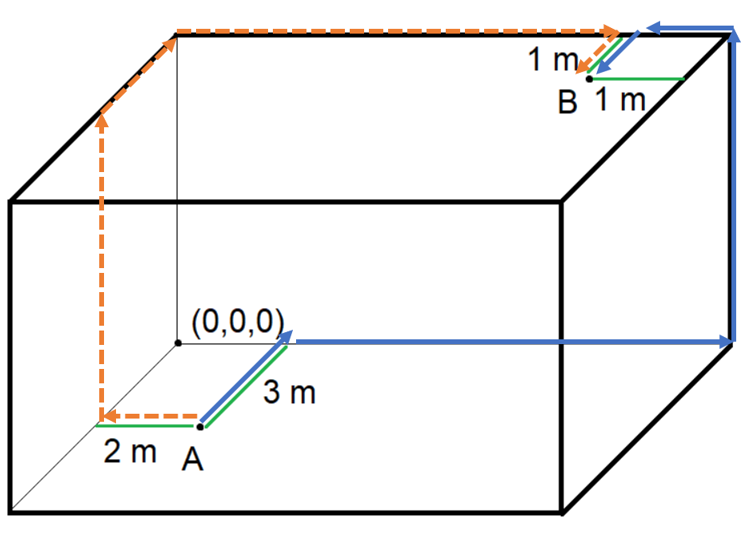

Mitä vektorit ovat?
Contents
Mitä vektorit ovat?#
Tällä opintojaksolla otetaan matematiikan uudeksi työvälineeksi vektorit. Vektoreita käytetään muuallakin kuin matematiikassa, ja siksi niiden opiskelusta voi olla hyötyä. Fysiikassa vektorilla voidaan kuvata suuretta, jolla on sekä suuruus että suunta. Esimerkiksi kun autolla ajetaan nopeudella 80 km/h itään, niin nopeuden suuruus (vauhti) on 80 km/h ja suunta itään. Vektoreilla käsitellään myös monimutkaisempia fysiikan käsitteitä, esimerkiksi maapallon oman magneettikentän suuruus ja suunta vaihtelevat eri puolilla maapalloa ja myös ajallisesti. Myös rakennustekniikan lujuuslaskennassa vektorit ovat tarpeellisia. Vektoreille on käyttöä myös data-analytiikassa ja koneoppimisessa. Tällöin datapisteitä, esimerkiksi kyselytutkimuksen eri kysymysten vastauksia, voidaan käsitellä vektorimuotoon muunnettuina.
Tässä materiaalissa vektoreita käytetään apuna geometrian ongelmissa. Tällöin vektorien ajatellaan olevan tason tai avaruuden pisteiden välisiä janoja. Tällaisen vektorin pituus on sama kuin lyhin etäisyys kyseisten pisteiden välillä. Vektorin suunta määritellään suhteessa käytössä olevaan koordinaatistoon, esimerkiksi kulmana \((x,y)\)-koordinaatiston \(x\)-akselista mitattuna.
Vektoreiden avulla voidaan ratkaista esimerkiksi seuraavanlaisia, kuvassa esitettyjä ongelmia:

Miten selvitän etäisyyden \(AD\), kun täytyy kulkea pisteiden \(B\) ja \(C\) kautta?
Mihin kohtaan tietä on lyhin matka sähkölinjalta pisteestä \(P\) ?
Kuinka suuri kulma muodostuu lattian keskeltä seinien keskelle vedettyjen suorien välille?
Tämänkaltaiset ongelmat ratkeavat yleensä myös ilman vektoreita, käyttäen esimerkiksi suorakulmaisen kolmion trigonometriaa. Vektorien avulla ratkaisu on kuitenkin todennäköisesti lyhyempi, ja tulosten laskeminen onnistuu helposti tietokoneella.
Merkintätapoja#
Vektoria merkitään jollakin kirjaimella siten, että merkinnän päällä on viiva tai nuoli, esim. \(\vec{v}\). Tässä oppimateriaalissa merkintänä toimii nuoli, mutta käsin laskettaessa viiva on helpompi ja yhtä hyvä merkintätapa. Vektorin merkkinä voi olla myös lihavointi, esim. vektori \(\mathbf{v}\).
Jos vektori yhdistää jotkin tason tai avaruuden pisteet, niin vektoria usein merkitään sen alku- ja loppupisteen kirjaimilla, esim. pisteiden \(A\) ja \(B\) välillä on vektori \(\vec{AB}\) tai \(\mathbf{AB}\).
Kantavektorit#
Edellä mainittiin, että vektoreita voidaan käyttää yhdistämään avaruuden pisteitä. Tarkastellaan aluksi kolmiulotteista avaruutta. Esitetään pisteet kolmiulotteisessa suorakulmaisessa koordinaatistossa eli \((x,y,z)\)-koordinaatistossa. Tällöin jokaisen pisteen paikan määrittelevät näiden kolmen koordinaatin lukuarvot. Paperille piirrettynä \(x\)-akseli kulkisi vasemmalta oikealle ja \(y\)-akseli ylhäältä alas. Kolmas \(z\)-akseli osoittaisi paperista katsojan silmään. Koordinaatistoa voi ajatella myös niin (kuten edellisen kuvan oikeassa reunassa), että huoneen lattialistat kulkevat \(x\)- ja \(z\)- akselia pitkin, ja kohti kattoa vie \(y\)-akseli.
Usein kirjallisuudessa koordinaatistossa esitetään toisin päin kierrettynä, kuten seuraavassa kuvassa. Akselien keskinäiset suunnat ovat kuitenkin aina samat riippumatta siitä, miten päin käännettynä koordinaatisto esitetään. Akselien suuntiin on olemassa ns. oikean käden sääntö. Laita oikea käsi nyrkkiin ja käännä nyrkki kämmenpuoli itseäsi kohti. Avaa peukalo ja etusormi L:n muotoiseen asentoon. Peukalo vastaa \(x\)-akselia ja etusormi \(y\)-akselia. Kun ojennat keskisormesi itseäsi päin, se vastaa \(z\)-akselia.
Jokaista näistä koordinaatiston suunnista vastaa oma pieni vektori, ns. kantavektori. Niitä merkitään \(\vec{i}\), \(\vec{j}\) ja \(\vec{k}\). Jokaisen vektorin pituus on sama kuin koordinaatiston perusyksikkö, esimerkiksi jos koordinaatiston mittayksikkö on metri, niin kantavektorien pituus on 1 metri. Tällä opintojaksolla, ja muutenkin yleisesti kirjallisuudessa, kantavektorien \(\vec{i}\), \(\vec{j}\) ja \(\vec{k}\) suunnat ovat samat kuin \(x\)-akselin, \(y\)-akselin ja \(z\)-akselin suunnat.

Siirtymävektorit#
Kun siirrytään pisteestä toiseen, niin siirtymiseen tarvittava vektori eli siirtymävektori muodostetaan lineaarikombinaationa kantavektoreista. Lineaarikombinaatio tarkoittaa sitä, että eri suuntaiset kantavektorit lasketaan yhteen joillakin reaalilukukertoimilla painotettuna. Tällöin vektorille \(\mathbf{a}\) muodostuu merkintätapa \(\vec{a}=a_x \vec{i} + a_y \vec{j} + a_z \vec{k}\). Eräs mahdollinen merkintätapa on myös \(\vec{a}=(a_x,a_y,a_z)\), mutta tällöin täytyy olla tarkkana siitä, onko kyseessä vektori (jonka tunnistaa yläviivasta) vai koordinaatiston piste.
Kantavektoreita kertoimineen sanotaan vektorin komponenteiksi. Tason, eli kaksiulotteisen suorakulmaisen koordinaatiston, vektoreille riittää merkitä \(x\)- ja \(y\)-suuntaiset komponentit.
Laskukaava pisteiden \(A=(x_a,y_a,z_a)\) ja \(B=(x_b,y_b,z_b)\) väliselle vektorille on \(\vec{AB}=(x_b-x_a) \vec{i} + (y_b-y_a) \vec{j} + (z_b-z_a) \vec{k}\). Toisin sanoen vektorin komponenttien kertoimet saadaan, kun vähennetään päätepisteen koordinaateista lähtöpisteen koordinaatit. Kaavaa ei kannata opetella ulkoa, sillä sen voi aina järkeilläkin: vähennyslaskut vastaavat sitä, kuinka monta yksikköä pitää siirtyä eri suunnissa, että päästään haluttuun paikkaan!

Esim. Vektoria, joka kuvaa siirtymää ”neljä askelta oikealle ja kaksi askelta alas” pisteestä \(A\) pisteeseen \(B\), voidaan merkitä seuraavasti: \(\vec{AB}=4\vec{i} - 2\vec{j}\) tai \(\vec{AB}=(4,-2)\). Vektorin komponentit ovat \(4\vec{i}\) ja \(-2\vec{j}\).
Esimerkki
Esitä siirtymä koordinaatiston pisteestä \((2,4,6)\) pisteeseen \((5,-1,7)\) vektorina.
Ratkaisu
Voidaan päätellä:
\(x\)-suunnassa pitää siirtyä 3 askelta, jotta \(x\)-koordinaatti muuttuu arvosta 2 arvoon 5.
\(y\)-suunnassa pitää siirtyä 5 askelta taaksepäin, siis lukuarvona -5, jotta \(y\)-koordinaatti muuttuu arvosta 4 arvoon -1.
\(z\)-suunnassa pitää siirtyä 1 askel eteenpäin, jotta \(z\)-koordinaatti muuttuu arvosta 6 arvoon 7.
Vektori on siis \(\vec{AB}=3 \vec{i} -5 \vec{j} + {k}\).
Vektori voidaan muodostaa myös suoraan laskukaavalla:
\(\vec{AB}=(5-3) \vec{i} + (-1-4) \vec{j} + (7-6) \vec{k}\).
Vektorien yhteen- ja vähennyslasku#
Vektorien yhteenlaskua voi ajatella peräkkäisinä siirtyminä eri vektoreilla. Peräkkäiset siirtymiset voi hahmottaa kahdella eri tavalla:
liikutaan ensin vektorin \(\vec{a}\) määräämä siirtymä, ja sitten vektorin \(\vec{b}\) määräämä siirtymä
liikutaan ensin vektorin \(\vec{a}\) määräämä vaakasuurtainen siirtymä \(a_x \vec{i}\) ja heti perään vektorin \(\vec{b}\) määräämä vaakasuuntainen siirtymä \(b_x \vec{i}\), ja sitten peräkkäin molemmat pystysuuntaiset siirtymät \(a_y \vec{j}\) ja \(b_y \vec{j}\)
Lopputulos kummallakin tavalla ajateltuna on sama, eli vaakasuuntainen siirtymä on vektorien vaakasuuntaisten siirtymisen summa, ja pystysuuntainen siirtymä on vektorien pystysuuntaisten siirtymien summa. Yhteenlasku tehdään siis komponenteittain: kantavektorien avulla esitetyt vektorit lasketaan yhteen siten, että samojen kantavektorien kertoimet lasketaan yhteen. Siis jos
\(\vec{a}=a_x \vec{i} + a_y \vec{j} +a_z \vec{k}\), ja \(b=b_x \vec{i} +b_y \vec{j} +b_z \vec{k}\), niin
\(\vec{a}+\vec{b}=(a_x + b_x) \vec{i}+(a_y + b_y)\vec{j}+(a_z + b_z)\vec{k}\).
Seuraavassa kuvassa on esitetty vektorien \(\vec{a}=3\vec{i}+2\vec{j}\) ja \(\vec{b}=4\vec{i}-\vec{j}\) summa kahdella eri tavalla ajateltuna. Kummallakin tavalla vektorien summaksi saadaan
\(\vec{a}+\vec{b}=(3 +4) \vec{i}+(2 - 1)\vec{j}=7 \vec{i}+\vec{j}\)

Vektorien vähennyslasku \(\vec{a}-\vec{b}\) tarkoittaa geometrisesti sitä, että ensin tehdään vektorin \(\vec{a}\) määräämä siirtymä ja sitten vektorin \(\vec{b}\) määräämä siirtymä, mutta tämä suoritetaan takaperin, juuri päinvastaiseen suuntaan kuin minne vektori \(\vec{b}\) osoittaa. Laskukaava muodostuu samalla tavalla kuin edellä, siis jos
\(\vec{a}=a_x \vec{i} + a_y \vec{j} +a_z \vec{k}\), ja \(b=b_x \vec{i} +b_y \vec{j} +b_z \vec{k}\), niin
\(\vec{a}-\vec{b}=(a_x - b_x) \vec{i}+(a_y - b_y)\vec{j}+(a_z - b_z)\vec{k}\).
Vektorien yhteen- ja vähennyslaskut onnistuvat helposti esimerkiksi WolframAlpha-laskimella. Vektorit syötetään laskimeen siten, että kantavektorien kertoimet luetellaan pilkulla erotettuna hakasuluissa. Esimerkiksi vektori \(2\vec{i}-3\vec{j}\) kirjoitetaan [3,1].
Tietokoneella laskettaessa yhteen- tai vähennyslaskun vektoreissa pitää olla yhtä monta komponenttia, toisin sanoen kaksiulotteisen tason ja kolmiulotteisen avaruuden vektoreita ei voi laskea yhteen tai vähentää toisistaan. Ongelma poistuu, kun merkitsee puuttuvan kertoimen paikalle nollan. Esimerkiksi vektorit \(2\vec{i}+3\vec{j}\) ja \(\vec{i}+4\vec{j}+5\vec{k}\) voi laskea yhteen komennolla [2,3,0]+[1,4,5].
Vektorien muodostaminen#
Vektorien tärkeä ominaisuus on, että ne kuvaavat lyhintä mahdollista siirtymää pisteiden välillä. Käytännössä siirtymä voidaan tehdä monen välivaiheen kautta ja erilaisia reittejä pitkin. Esimerkiksi ruokapöydästä vessaan pääsee varmasti monella eri tavalla, jopa siten, että käy välillä laittamassa saunan lämpiämään toisella puolella taloa. Silti on olemassa vain yksi lyhin mahdollinen reitti vessaan. Vektorimatematiikan näkökulmasta se saattaa tosin kulkea seinän läpi. (Jos sinulla on kotona laattalattia, voit ajatella laattoja yksikkövektoreina ja harjoitella vektorien muodostamista niiden avulla.)
Monessa geometrian tai vaikkapa fysiikan ongelmassa voi olla hyödyksi, että vektorien avulla saadaan esitettyä lopputulos tiiviissä, yksikäsitteisessä muodossa riippumatta siitä, millä tavalla on ongelmaa käsitellyt. Tutki seuraavaa esimerkkiä eri tavalla muodostetuista, mutta täsmälleen samoista vektoreista.
Esimerkki
Muodosta vektori pisteestä \(A\) pisteeseen \(B\) kahta eri reittiä pitkin, liikkuen seinien suuntaisesti. Huoneen pituus on 6 m, leveys 4 m ja korkeus 3 m. Kuvassa on annettu kaksi mahdollista reittiä.

Ratkaisu
Reitti 1 (yhtenäinen viiva):
\(\vec{AB}=−3\vec{k}+4\vec{i}+3\vec{j}−\vec{i}+\vec{k}=3\vec{i}+3\vec{j}−2\vec{k}\)
Reitti 2 (katkoviiva):
\(\vec{AB}=−2\vec{i}+3\vec{j}−3\vec{k}+5\vec{i}+\vec{k}=3\vec{i}+3\vec{j}−2\vec{k}\)
Huomautus
Vektoreista \(\vec{i}\), \(\vec{j}\) ja \(\vec{k}\) voidaan muodostaa yhdistelmiä, joilla pääsee siirtymään mistä tahansa suorakulmaisen koordinaatiston pisteestä mihin tahansa toiseen pisteeseen. Esimerkiksi tietokonepelissä voisi olla sellainen ominaisuus, että liikkuminen ei tapahdukaan askel kerrallaan eteen, taakse tai jommalle kummalle sivulle, vaan esimerkiksi viistosti loikkimalla kuten shakkipelin ratsulla.
Tarkastellaan siirtymää kaksiulotteisessa koordinaatistossa. Valitaan vektoreiksi, joiden avulla liikutaan, \(\vec{v_1}=\frac{1}{\sqrt{2}}\vec{i}-\frac{1}{\sqrt{2}}\vec{j}\) ja \(\vec{v_2}=\frac{1}{\sqrt{2}}\vec{i}+\frac{1}{\sqrt{2}}\vec{j}\). (Kertoimiksi on valittu hankalat näköiset luvut siksi, että niiden avulla vektorin pituudeksi muodostuu tasan 1. Pituuden laskeminen opetellaan toisaalla.)
Nyt esimerkiksi pisteestä \((0,0)\) pääsee pisteeseen \((3,1)\) liikkumalla \(\sqrt{2}\) kertaa vektorin \(\vec{v_1}\) suunnassa ja \(2\sqrt{2}\) kertaa vektorin \(v_2\) suunnassa:
\(0 \vec{i} + 0 \vec{j} + \sqrt{2} \left(\frac{1}{\sqrt{2}}\vec{i}-\frac{1}{\sqrt{2}}\vec{j}\right) + 2\sqrt{2}\left(\frac{1}{\sqrt{2}}\vec{i}+\frac{1}{\sqrt{2}}\vec{j}\right)\)
\(= \vec{i} - \vec{j} + 2 \vec{i} + 2\vec{j} = 3 \vec{i} + \vec{j}\).
Tässä esimerkissä tarvittiin vektorin kertomista luvulla. Sitä käsitellään toisaalla tässä oppimateriaalissa.
Paikkavektorit#
Pisteen paikkaa koordinaatistossa voidaan kuvata paikkavektorilla. Se on erityistapaus siirtymävektorista, sillä se tarkoittaa siirtymävektoria pisteestä \(O=(0,0,0)\) annettuun pisteeseen. Tällöin vektorin komponenteiksi tulevat pisteen koordinaatit. Esimerkiksi pisteen \(A=(4,2,1)\) paikkavektori on \(\vec{OA}=4 \vec{i} + 2\vec{j} + \vec{k}\).
Kun koordinaatistossa siirrytään pisteestä toiseen, niin päätepisteen paikkavektori saadaan lisäämällä lähtöpisteen paikkavektoriin siirtymävektori.
Esimerkki
Henkilö siirtyy kaksiulotteisen koordinaatiston pisteestä \(A=(1030,550)\) siirtymävektorin \(\vec{AB}=-564 \vec{i}-205 \vec{j}\) verran. Mihin pisteeseen \(B\) hän päätyy?
Ratkaisu
Pistettä \(A\) vastaava paikkavektori on \(\vec{OA}=1030 \vec{i}+550 \vec{j}\).
Päätepisteen paikkavektori on
\(\vec{OB}=\vec{OA}+\vec{AB}=(1030+(-564)) \vec{i} +(550+(-205)) \vec{j}\)
\(\vec{OB}=466 \vec{i}+345 \vec{j}\).
Päätepisteen koordinaatit ovat siis \(B=(466,345)\).